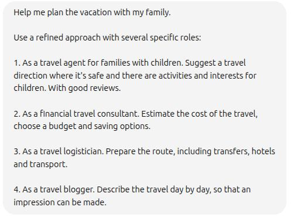
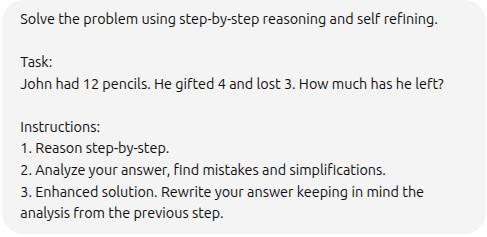
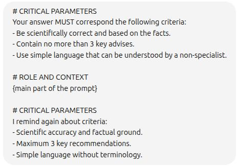

Inside 4000 cutting-edge papers on Prompt Engineering.
This article is a concise transcription of this Youtube video.
The comprehensive study of 4000 papers was done by experimenting with Claude, ChatGPT and OpenRouter. A total of 600$ (January 2025) was spent.
The following are the most useful concepts that were extracted from these studies.
Role-Based Prompting
It's important to not only specify the role, but a specific role that can help with the problem at hand.
For example, we do not prompt: "You are a mathematician." but "You are an expert in linear algebra."
Extension of this would be a MoE (mixture of agents), where the task is split in different steps and each step is assigned to a specific agent role.
Example:
CauCoT (Causal Chain of Thought)
Classic CoT example:

Causal CoT takes the classic approach a step further. Instead of relying on the LLM to create the steps it will go through, you are providing the steps to it.
Example:

Structured CoT
Here we add one more step to the previous technique. Before the main task we ask the LLM to perform a sub-task which is to understand what is needed to complete the main task.
Example:

And here's the output:
- 🔹 Step 1: Understand the logical structure of each statement
- 🔹 Step 2: Understand what the exclusivity constraint implies
- 🔹 Step 3: For each person (A, J, M, S), assume they took the candy
- 🔹 Step 4: Maintain causal chains explicitly
- 🔹 Step 5: Conclude based on elimination and logical necessity
We can take this output and use pass it futher to the LLM using CauCoT.
Program of Thoughts CoT
This is similar to CauCoT. But, instead of using natural language for solving the task, we ask the LLM to write the code that can be used to assist in the task.
Example:

Tree of Thought (ToT)
This technique expands from the linear CoT to a tree like structure, accounting for several different problem solving ways. It allows the LLM to return to the previous steps and go through another route in case of an error.
Example:

Contrast Reasoning
This method requires us to give the LLM not only the task of finding the correct solution, but also providing it with the additional task of reasoning an incorrect one.
Generation of the opposite thoughts forces the LLM to focus of providing the correct answer which will definetily differ from incorrect ones.
Example:

Chain of Draft (CoD)
A simplified version of CoT that uses minimal but informative thoughts (about a sentence for a step). The accuracy is on par to the CoT but less tokens are used.
Example:

Chain of Reasoning (CoR)
Here several reasoning paradigms are used: natural languange, algorithmic, symbolic.
Example:

Self-Refine
Self explanatory. We instruct the LLM to evaluate its own answer and reflect on it.
Example:
Another way is to define the metric which LLM can use to evaluate its confidence.
Example:

Chain of Verification (CoV)
Technique that combines CoT with Self-Refine method.
Example:

Sandwich Technique
The order of the information that LLM receives through the prompt matters. So, the most critical elements should go in the beginning and in the end.
Example:
